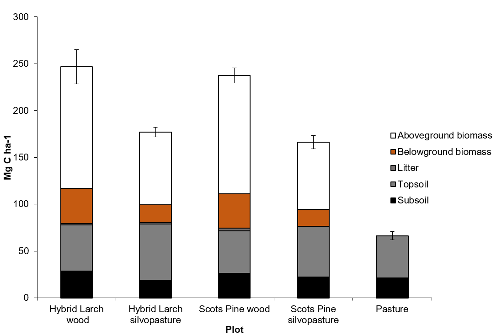

Measuring and Modelling Carbon Sequestration in the Scottish Uplands
From Pasture to Peatland
Carbon in the Scottish Uplands
Carbon in the Scottish Uplands


Land use

Increase carbon sequestration
Protect and manage petlands for carbon benefits
Increase tree cover
Integrate trees with agricultural prodution
Glensaugh farm
Management

Measuring Carbon

Modelling -RothC
Input
- Climate data
- Plant input
- Clay
Model
Fractionation for model validation

Zimmermann M, Leifeld J, Schmidt MWI, Smith P, Fuhrer J (2007)
Measured soil organic matter fractions can be related to pools in the RothC model. European Journal of Soil Science, 58, 658-667
Fractionation for model validation


Peaty soils
- ECOSSE
- derived from RothC (carbon) and sundial (nitrogen) models
- developed for mineral and organic soils

Marschner B, Brodowski S, Dreves A et al. (2008) How relevant is recalcitrance for the stabilization of organic matter in soils? Journal of Plant Nutrition and Soil Science, 171, 91-110
Hot water extractions and acid hydrolysis

Shirato Y, Yokozawa M (2006) Acid hydrolysis
to partition plant material into decomposable and resistant fractions for use in the Rothamsted carbon model. Soil Biology and Biochemistry, 38, 812-816

Reverse estimation of carbon pools

Reverse estimation of carbon pools
Spectroscopy
for char and carbon quality assessment